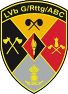
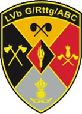

Attestation de formation et de compétence
L′Armée suisse confirme que
{{User.FirstLastName}}
né le {{User.Birthdate | Date: "dd.MM.yyyy"}}
a accompli le service militaire suivant:
| Service militaire à: |
{{User.Text1}} |
| Période: |
{{DateAcquired | Date: "dd.MM.yyyy"}} - {{ValidUntil | Date: "dd.MM.yyyy"}} |
| Fonction: |
Pontonnière de sonnettes - conductrice B en service long |
| Rang: |
Soldat |
Je tiens à remercier la soldat {{User.FirstLastName}} pour son service dans l′Armée suisse et lui souhaite beaucoup de succès et de satisfaction
dans sa future carrière.
Brigade de défense aérienne basée au sol 33
Brigadier Peter Soller
Commandant
Cette attestation de formation et de compétence est transparente et ne contient donc pas d′information cachée
Durant l′école de recrues, il a acquis les compétences théoriques et pratiques suivantes:
| Compétences |
Contenu / Portée |
|
Responsabilité personnelle
|
En vivant ensemble dans son unité, il a dû prendre des responsabilités
pour lui-même et pour les autres au sein du groupe.
|
|
Loyauté
|
Pendant la période de service, il a vécu selon les valeurs de la communauté, les normes
sociales et les rêgles spécifique
|
|
Résilience
|
Pendant l′école de recrues, il a connu des phases de stress physique et psychologique accru.
Il a résisté à ces conditions difficiles et a pu se concentrer sur l′essentiel.
|
|
Capacité d′apprentissage et d′adaptation (flexibilité)
|
Grâce à sa capacité d′apprentissage et d′adaptation, il a pu s′acclimater à un environnement peu familier.
|
|
Capacité à gérer les critiques et les conflits
|
Dans des conditions de stress physique et/ou psycho-économique accru, la capacité à gérer les critiques et les conflit
|
|
Travail d′équipe
|
Le partage des tâches, des objectifs et des expériences a renforcé le respect et l′appréciation mutuels
|
|
Compétences sociales
|
Des personnes d′origines, de langues, de cultures, de sexes, de religions et de statuts sociaux différents
l′ont accompagné pendant son service et ont mis au défi/promu ses compétences sociales
|
|
Compétences techniques
|
|
Il a suivi les modules de formation spécialisée ci-dessous:
- Formation théorique et pratique de conductrice de bateau avec permis, correspond à la formation civile cat. A
- Travaux d’aménagement hydraulique, y c. le battage de pieux en bois
- Montage et démontage de systèmes de ponts provisoires
- Conductrice de bateau lors d’actions de franchissement menées avec diverses embarcations
- Habilitation à la conduite de véhicules jusqu’à 3,5 t, avec ou sans remorque, même dans des conditions difficiles sur route et dans le terrain
Il avait les tâches suivantes:
- Utilisation de moyens de génie spécifiques
- Utilisation, maintenance et entretien de petits appareils
- Conducteur de bateau lors d’actions de franchissement menées avec diverses embarcations
- Entretien des véhicules de manière autonome dans le cadre des prescriptions du service de parc, jusqu’à ce que les travaux de réparation nécessaires soient effectués
Dans le cadre de l′aide à soi-même et au camarade, il a accompli une formation de secouriste.
L′Armée suisse procède régulièrement à des contrôles de sécurité relatifs aux personnes. La personne
concernée a passé sans problème le premier contrôle effectué au moment de son recrutement.
En tant que militaire en service long, elle a rempli ses obligations de service d’instruction
et n’est donc plus convoqué aux cours de répétition.
|